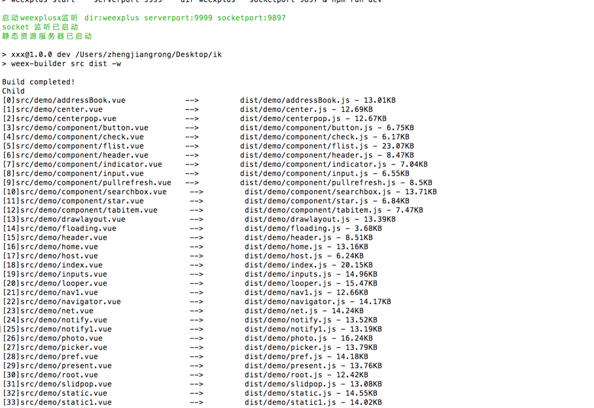
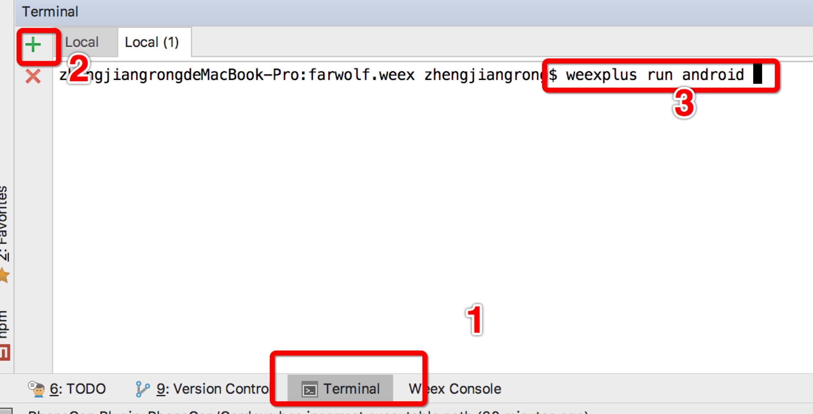

运行
如何看到实际开发的效果，我们强烈推荐使用webstorm开发weex
用webstorm打开项目
找到位于下方的终端选项卡，开启一个，输入npm install，回车
上一步完毕之后，输入npm run weexplus
这之后如果看到一下界面证明weex的环境好了，这时候在浏览器上打开http:localhost:9999/index.js有返回内容证明没问题

如果你用的Android手机，请再开启一个控制台像下图所示那样操作

记得先把你的手机插上，确保开发者模式已打开，usb调试也打开了，如果是小米手机还要记得把usb安装也勾上，等运行完毕，就会看到界面，当然这时候你只能在手机上看到加载失败的界面，因为默认加载的地址是http:127.0.0.1:9999/index.js，怎么改变这个地址，点击设置->扫描二维码，把新地址变成二维码扫描一次即可，这个地址会被存起来，除非重新扫了码。ios的 运行weexplus run ios 按提示操作即可